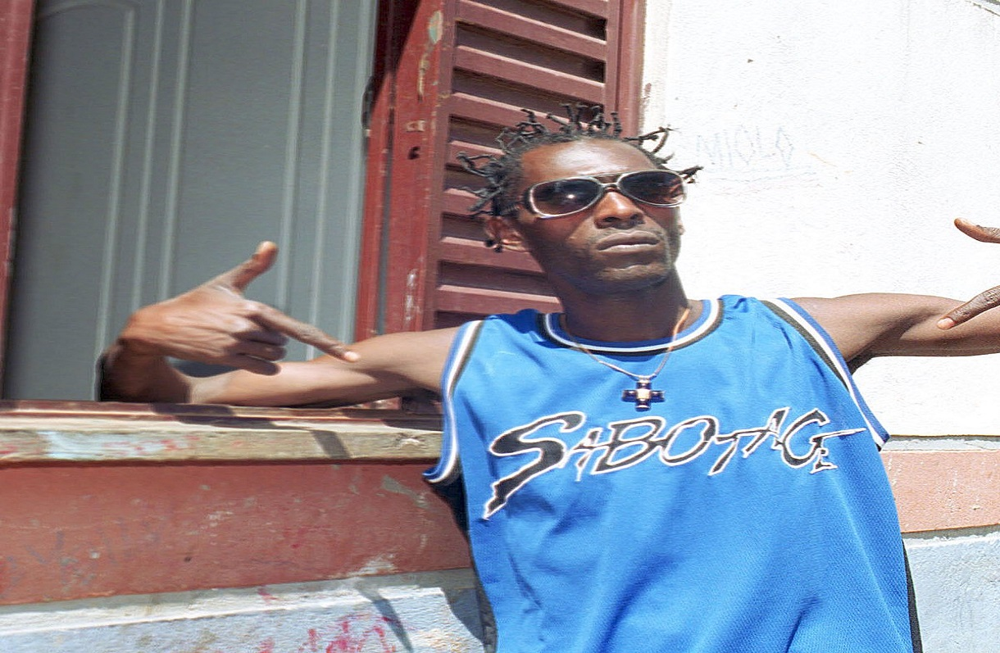
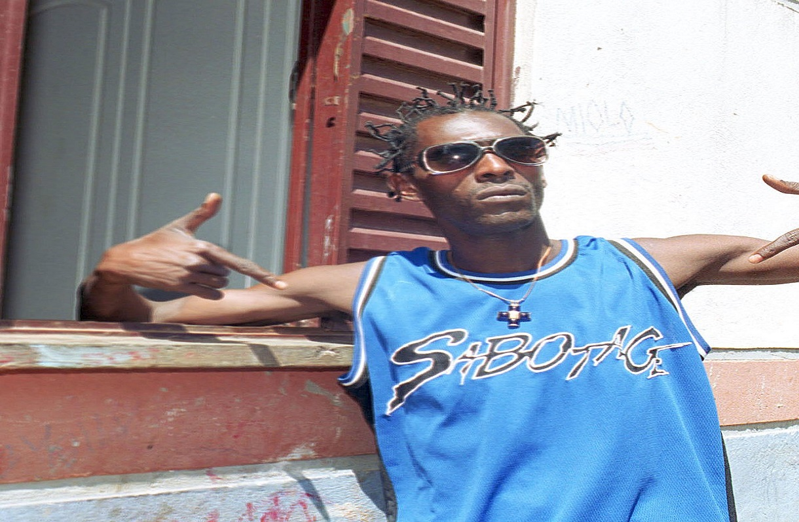

Mauro Mateus dos Santos (São Paulo, 3 de abril de 1973 — São Paulo, 24 de janeiro de 2003), mais conhecido
pelo seu nome artístico Sabotage, foi um rapper, cantor, compositor e ator brasileiro. Mauro, pai de 2
filhos, nasceu na Zona Sul de São Paulo, onde, depois de ter sido assaltante e gerente de tráfico encontrou
a saída no rap, entrando na música e percebendo o seu verdadeiro dom. A origem do apelido Sabotage deu-se
por estar sempre conseguindo burlar as leis com tremendo êxito, como entrar em bailes, festas e boates sem
permissões, e saindo ileso de inúmeras confusões. Considerado uma lenda na Zona Sul, ele inspirou vários
rappers, como Rhossi, Pavilhão 9, além de ter ensinado Paulo Miklos como ser um digno malandro, no filme "O
Invasor", de Beto Brant, com quem escreveu até uma música. Sabotage fez um único disco solo, o Rap é
Compromisso!, e participou de vários CDs com o RZO, SP Funk e outros. Em 2016, 13 anos após sua morte, o
álbum que leva o mesmo nome do cantor foi lançado no serviço de streaming Spotify. Nele estão diversas
canções feitas na semana em que o rapper foi assassinado.[1]
Também fez parte de dois filmes, o já citado "O Invasor", e o premiado "Carandiru", além de ter recebido
vários prêmios, como personalidade, revelação e outros no Hútus, o grande festival de premiação de rap no
Brasil. Morreu com 4 tiros em 24 de janeiro de 2003. Vale ressaltar que Sabotage era o próprio compositor e
cantor de suas músicas. Ele foi enterrado no cemitério do campo grande no dia 25 de janeiro de 2003. Em toda
sua carreira, compôs dezenas de trabalhos e alguns deles se tornaram uma espécie de hino para jovens da
periferia. Para muitos, Sabotage é uma rica expressão da constante luta que o pobre enfrenta diariamente
para viver dignamente e isso fez com que vários outros artistas usassem suas obras como samples, colagens e
scratches de seus trabalhos.


 
